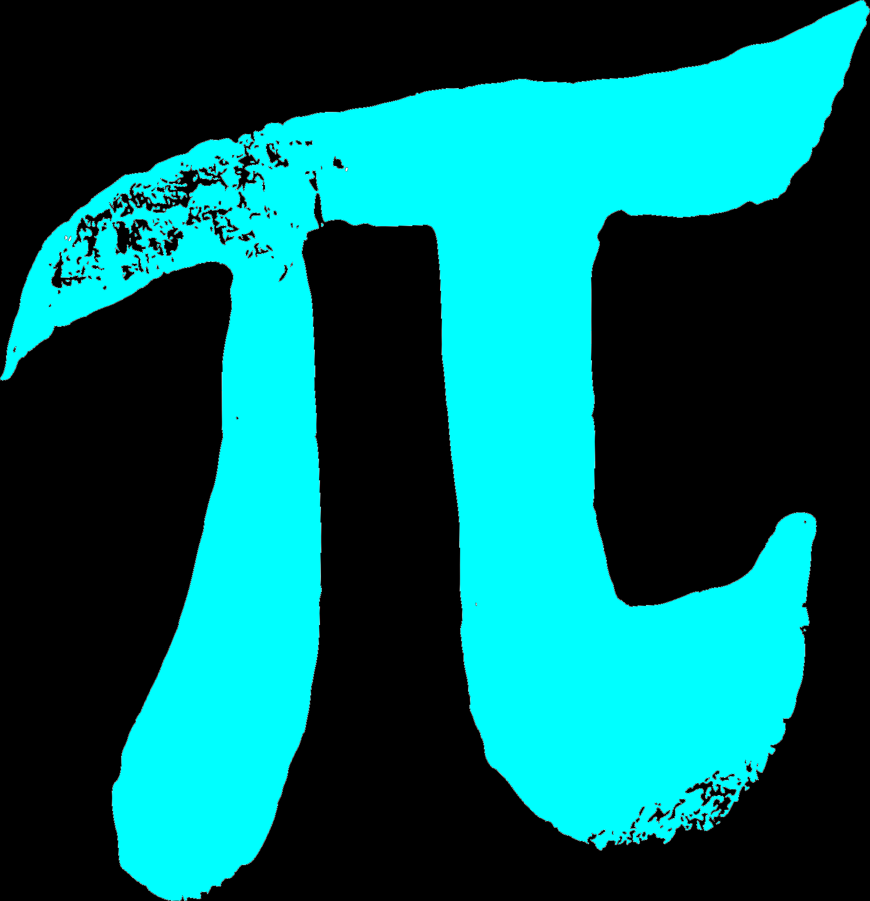

Pyetësor mbi ditën botërore së konstantes PI
1) A është 14 marsi Dita Botërore e Numrit PI?
a. Po
b. Jo
2) Në cilin vit u vendos simboli i PI-së?
a. 1706
b. 1506
c. 1401
3) A ka PI përdorim të gjerë në trigonometri dhe topografi?
a. Po
b. Jo
4) Nga cila gjuhë vjen simboli i PI-së?
a. Latinisht
b. Greqisht
c. Arabisht
5) A e përdorim PI për të llogaritur perimetrin, volumin e një cilindri,
për aplikim në prodhimin e pneumatikëve, shisheve, vazove ose orëve?
a. Po
b. Jo
6) Me sa shifra është vlera e PI-së?
a. 36
b. 16
c. Asnjë më lart
7) 14 mars për herë te parë është shënuar në Europë?
a. Po
b. Jo
8) Në cilën lëndë përdoret simboli i PI-së?
a. Letërsi
b. Matematikë
c. Gjeografi
9) A është e vërtetë që shkencëtarët e konsiderojnë PI si numri i kaosit?
a. Po
b. Jo
10) Cili matematikan e përdori për herë të parë simbolin e PI-së?
a. William Shanks
b. Yasumasa Kanada
c. Daisuke Takahashi
11) Si shkruhet PI në anglisht?
a. Pie
b. Pi
12) çfarë është numri PI?
a. Numër kostant
b. Thyesë
c. Parabol
13) Sa eshte perllpgaritja e fundit te shifrave pas presjes?
a. 62.8 trilion
b. 50 milion
14) Kur u zbulua shenja e pi-se?
a. Shekulli i 5-te pes
b. Shekulli i 15-te pes
c. Shekulli i 17-te pes

Merr Përgjigjet